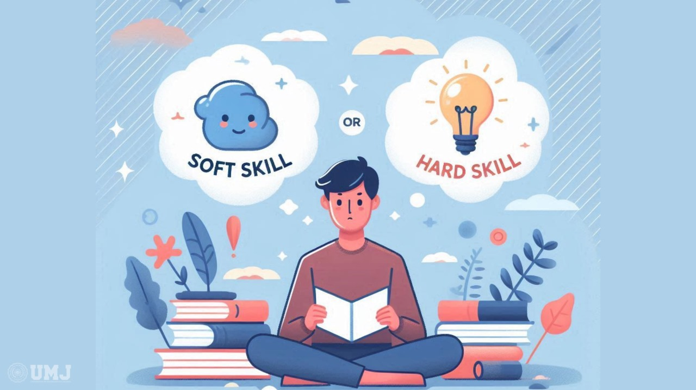

Kesimpulan
Berdasarkan pengalaman kelompok kami sendiri, Lestarika Luminia. Disimpulkan bahwa pelaksanaan proyek Integrated Learning (IL) yaitu kegiatan bazaar dan pentas seni telah memberikan banyak sekali manfaat bagi kami semua tentunya. Melalui proyek ini, siswi dapat berhasil mengintegrasikan berbagai mata pelajaran seperti Bahasa Indonesia, Bahasa Inggris, Matematika, IPS, IPA, Prakarya, PPKN, dan Agama dalam satu kegiatan nyata berupa bazar. Selain itu, juga mata pelajaran Kesenian berupa pentas seni pertunjukan. Dari awal proses sampai akhir hasil kegiatan ini, kami semua belajar cara merencanakan dan menjalankan usaha mulai dari nol. Dari menentukan produk, menghitung modal, menetapkan harga jual, hingga membuat laporan hasil penjualan. Tidak hanya itu, kami juga mempraktikkan strategi promosi yang persuasif melalui pembuatan iklan dan slogan menarik untuk menarik perhatian para konsumen/pembeli.
Kegiatan ini memberikan pengalaman langsung di berbagai bidang kehidupan, yang tentunya mengajarkan kami skill-skill yang berguna untuk masa depan. Terutama di bidang kewirausahaan yang tidak hanya perlu memahami konsep ekonomi secara teori, tetapi juga cara menerapkannya dalam dunia nyata dan menghadapi tantangan-tantangan di era modernisasi dan globalisasi ini. Selain aspek wirausaha, proyek ini juga memungkinkan peserta untuk mempelajari dan mempraktikkan bioteknologi melalui pembuatan produk. Kelompok kami memilih untuk membuat bahan makanan bioteknologi, yaitu roti, yang kemudian diolah menjadi Katsu Sandwich. Hal tersebut mengajarkan kami tentang dunia kecanggihan bioteknologi, juga cara mengembangkan ide yang kreatif dan inovatif. Selain di bidang-bidang tertentu, tentunya kami semua juga mempelajari banyak sekali hal positif yang berguna untuk masa depan. Skill individu dan bekerja dalam kelompok itu hal yang paling utama kami telah pelajari. Skill-skill bekerja sama, disiplin, tanggung jawab, saling membantu, berani dan tangguh, dan berpikir kritis dalam menghadapi masalah. Keterampilan-keterampilan tersebut-lah yang paling penting dan bermanfaat yang kami sudah pelajari selama perjalanan kegiatan ini. Dengan meningkatkan keterampilan dan skill tersebut, kami dapat menjalani dan menghadapi berbagai tantangan di kedepannya dengan lebih benar lagi.
Jadi, selain aspek akademik, proyek IL ini juga melatih keterampilan non-akademik yang penting sekali dalam kehidupan bermasyarakat. Kerja sama, tanggung jawab, dan komunikasi yang efektif. Para peserta menyadari pentingnya untuk membangun komunikasi dan hubungan yang baik antar anggota dalam kelompok. Dengan membangun kesaudaraan tersebut, kami dapat menjalani proses kegiatan bazaar dengan lebih kompak lagi. Membangun komunikasi yang baik juga dapat membantu kami untuk menyelesaikan tugas dengan efektif dan mencegah terjadinya kesalahpahaman. Kami menghadapi berbagai tantangan, termasuk perbedaan pendapat dan kesulitan koordinasi. Hal tersebut-lah yang menjadi pembelajaran berharga tentang pentingnya menyelesaikan konflik secara bersama-sama dan mufakat. Kegiatan ini juga tidak dapat diselesaikan tanpa pembagian tugas yang jelas dan adil sesuai dengan kemampuan masing-masing. Tentunya kami semua memiliki kelebihan dan kekurangan masing-masing, hal tersebutlah yang digunakan untuk saling melengkapi. Contohnya, anggota yang pintar memasak seperti Nia dan Emilie akan memimpin dalam proses memasak dan pembuatan produk bioteknologi. Anggota yang pintar menghitung dan mendata, seperti Celine dan Maima akan memimpin dalam pendataan hasil penjualan kami. Anggota yang memiliki berbagai inovasi dan kreatif baru, seperti Bella, Febi, dan Emilie yang selalu berencana dan memikirkan ide-ide baru yang dapat digunakan agar menciptakan produk-produk yang kreatif dan inovatif.
Secara keseluruhan, proyek Integrated Learning (IL) berjalan dengan baik dan memberikan pengalaman berharga dalam berbagai aspek, baik akademik maupun non-akademik. Peserta tidak hanya mendapatkan pemahaman teori di berbagai mata pelajaran, tetapi juga menerapkannya secara langsung di dunia nyata melalui proses perencanaan, pelaksanaan, hingga evaluasi bazar. Proyek ini membekali peserta dengan keterampilan praktis dalam kewirausahaan, seperti menganalisis pasar, menetapkan harga, menghitung keuntungan, dan menyusun laporan keuangan. Selain itu, mereka juga memahami pentingnya inovasi dan kreativitas dalam menciptakan produk yang berkualitas namun tetap terjangkau bagi konsumen. Dari segi interpersonal, proyek ini mengajarkan nilai pentingnya komunikasi yang terbuka, tanggung jawab individu, dan solidaritas dalam mencapai tujuan bersama. Dengan segala manfaat yang telah diperoleh, proyek IL membuktikan bahwa pembelajaran yang terintegrasi mampu memberikan pengalaman nyata yang membentuk karakter, meningkatkan keterampilan berpikir kritis, dan mempersiapkan peserta menghadapi tantangan di masa depan.